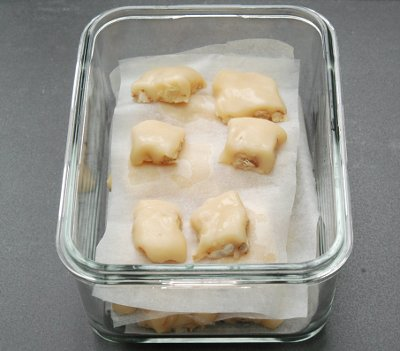

| Zutaten | |
| 2.5 dl | Rahm |
| 250 g | Zucker |
| 50 g | Cashew Nüsse |
Ein rundes Backblech von ca. 22cm Durchmesser mit Backpapier auslegen.
Rahm und Zucker in einer weiten Pfanne aufkochen, Hitze reduzieren.
Unter gelegentlichem Rühren ca. 30 Minuten köcheln, bis die Masse hellbraun und dickflüssig ist.
Pfanne von der Platte nehmen, Masse leicht abkühlen.
Nüsse ohne Fett rösten, fein hacken, unter die Caramelmasse mischen.
Masse in das vorbereitete Blech giessen, glatt streichen, ca. 1 Stunde fest werden lassen.
Masse auf ein Brett stürzen, Backpapier entfernen, beliebige Formen ausstechen oder in ca. 1.5 cm grosse Würfel schneiden
Haltbarkeit: in einer Dose kühl und trocken ca. 3 Wochen.
Betty Bossi Zeitung 10-04
Meine Niedeltäfeli schmecken eigentlich sehr gut und fast wie echt. Aber ich habe sie wohl nicht ganz lange genug gekocht denn sie sind etwas sehr weich. Der Kühlschrank hilft aber Sandra hat wohl recht wenn sie meint das sei nicht so einfach. RE 15.5.2010